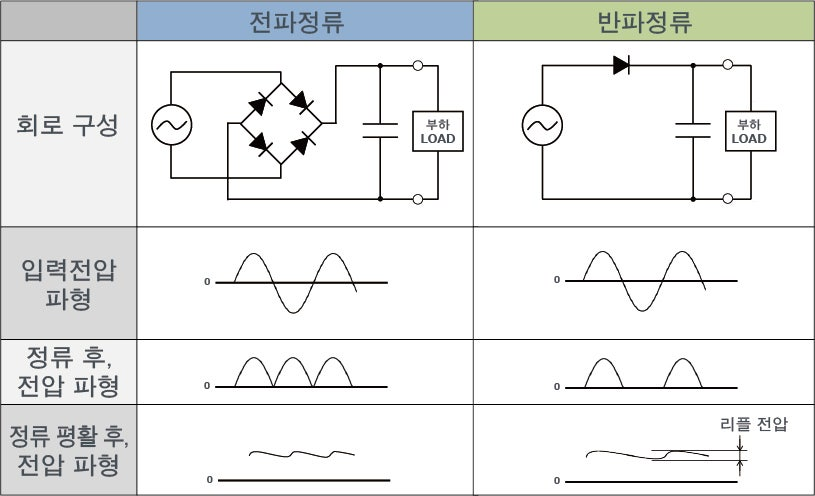

3507 김수현 - 교류 회로에서 디지털 시스템까지
| 정류 방식 | 다이오드 | 리플 주파수 |
|---|---|---|
| 반파 정류 | 1개 | \(f\) |
| 전파 정류 (브리지) | 4개 | \(2f\) |
전파 정류는 음의 반주기도 양으로 반전 → 리플 주파수 2배

| 방식 | 리플 주파수 | \(\gamma\) |
|---|---|---|
| 반파 | \(f\) | ≈ 1.21 |
| 전파 | \(2f\) | ≈ 0.48 |
\(\gamma\)가 작을수록 이상적인 직류에 가까움
전파 정류가 반파 대비 리플 약 절반
RMS = 제곱평균제곱근
회색 점선 = 정류 파형 / 검은 실선 = 커패시터 평활 후 출력
디지털 게이트는 전압 크기로 0과 1을 구분한다.
전원에 리플이 섞이면 신호가 불확정 영역에 진입할 수 있다.
\(V_r\)이 노이즈 마진 \(NM\)을 초과하면 0과 1을 오판하게 된다.
물리적 리플 → 소프트웨어 신뢰성 문제
질문이 있으신가요?